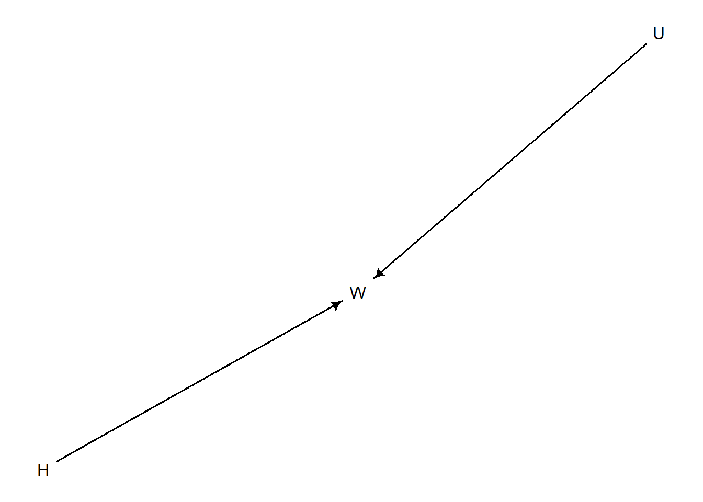
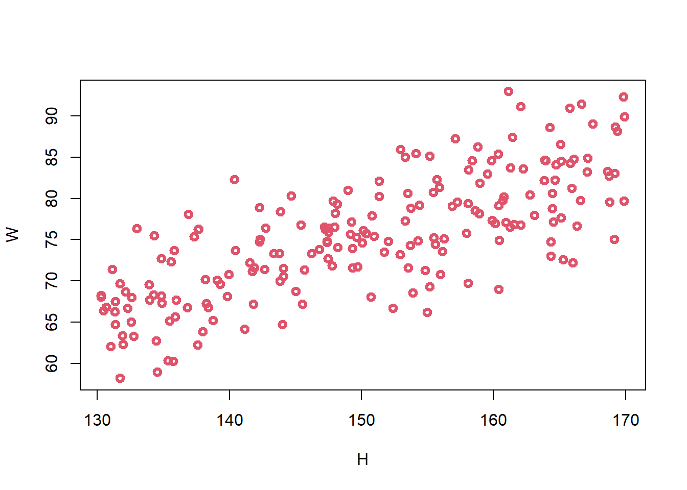

library(rethinking)
library(dagitty)
data(Howell1)Lecture 03 - Geocentric Models
Rose / Thorn
Rose: flow reminder! Retrograde explanation
Thorn: installing rethinking on windows
Linear Regressions
- essentially a geocentric model - overly simplified
- separate from a causal model
- associations are from the causal model, not the statistical model
Gaussian Distributions
- there are many more ways to end up in the center than to end up on the periphery
- why the Gaussian distribution spontaneously occurs in natural systems
- generative: if we add fluctuations, we tend towards normal distribution (lots of summed fluctuations in nature)
- inferential: estimating mean and variance, normal distribution is best one to use because it is least informative (no other information present)
- normal distribution is just a tool for estimating mean/variance because it has widest distribution
- data doesn’t have to be normal to be able to leverage the tool to estimate mean/variance
Workflow
- State a clear question
- Sketch causal assumptions
- Define generative model from sketch
- Use generative model to build estimator
- Profit
Describing Models
\[ W_{i}= \beta H_{i} + U_{i} \]
\[ U_{i} \sim Normal(0, \sigma) \]
\[ H_{i} \sim Uniform(130, 170) \]
= is deterministic
~ is distributional
Howell Example
- Question: Describe association between adult weight and height
d2 <- Howell1[Howell1$age>=18,]- Scientific model: weight is some function of height and unobserved influences
d <- dagitty("dag {
H -> W
U -> W
}")
drawdag(d)
\[ W = f(H, U) \]
- Generative/Statistical model
Two options: dynamic (complex and ongoing) and static
- Static model allows us to imagine changes at specific times and still use a Gaussian distribution
For adults, weight is a proportion of height plus the influence of unobserved causes
\[ W = \beta H+U \]
sim_weight <- function(H, b, sd){
U <- rnorm(length(H), 0, sd)
W <- b*H + U
return(W)
}
H <- runif(200, min = 130, max = 170)
W <- sim_weight(H, b = 0.5, sd = 5)
plot(W ~ H, col = 2, lwd = 3)
we want to estimate how the average weight changes with height
\[ E(W_{i}|H_{i}) = \alpha + \beta H_{i} \]
\(E(W_{i}|H_{i})\) = average weight conditional on height
\(\alpha\) = intercept (when height is 0, what is weight? Scientifically should be zero but putting it in model to make sure our model is scientifically sound)
\(\beta\) = slope
Posterior distribution:
\[ Pr(\alpha,\beta,\sigma| H_{i}, W_{i}) = \frac{Pr(W_{i}|H_{i}, \alpha,\beta,\sigma)Pr(\alpha,\beta,\sigma)}{Z} \]
\(W_{i} \sim Normal(\mu _{i}), \sigma)\)
\(\mu _{i} = \alpha + \beta H_{i}\)
alpha, sigma, beta are unknown so we need a posterior distribution for them (and they are dependent on the data)
\(Pr(\alpha,\beta,\sigma| H_{i}, W_{i})\) = posterior probability of specific line
\(Pr(W_{i}|H_{i}, \alpha,\beta,\sigma)\) = probability of each weight dependent on height value, alpha, beta, sigma
\(Pr(\alpha,\beta,\sigma)\) = prior
Statistical Model
Quadratic approximation
\(W_{i} \sim Normal(\mu _{i}), \sigma)\)
\(\mu _{i} = \alpha + \beta H_{i}\)
\(\alpha \sim Normal(0,10)\)
\(\beta \sim Uniform(0,1)\)
\(\sigma \sim Uniform(0, 10)\)
m3.1 <- quap(alist(
W ~ dnorm(mu, sigma),
mu <- a + b*H,
a ~ dnorm(0, 10),
b ~ dunif(0, 1),
sigma ~ dunif(0, 10)
), data = list(W=W, H=H))Priors
- we want to constrain to scientifically plausible values
- justify with information outside the data - like the rest of model
n <- 1e3
a <- rnorm(n, 0, 10)
b <- runif(n, 0, 1)
plot(NULL, xlim = c(130, 170), ylim = c(50, 90))
#for (j in 1:50) abline(a=a[j], b=b[j])- Validate model
test statistical model with simulated observations from scientific model - need to test if your model is working
use many values and make sure your model responds appropriately
# model summary
precis(m3.1) mean sd 5.5% 94.5%
a 0.7562141 4.30949043 -6.1311840 7.6436121
b 0.4948991 0.02858093 0.4492212 0.5405769
sigma 5.0085755 0.25042916 4.6083414 5.4088097- Analyze data
dat <- list(W = d2$weight, H = d2$height)
m3.2 <- quap(alist(
W ~ dnorm(mu, sigma),
mu <- a + b*H,
a ~ dnorm(0, 10),
b ~ dunif(0, 1),
sigma ~ dunif(0, 10)
), data = dat)
precis(m3.2) mean sd 5.5% 94.5%
a -43.3795514 4.17116968 -50.0458862 -36.7132167
b 0.5717593 0.02695341 0.5286826 0.6148361
sigma 4.2531367 0.16177885 3.9945828 4.5116905parameters are not independent of one another, they cannot be independently interpreted
- use posterior predictions and describe/interpret those by sampling the posterior distribution
post <- extract.samples(m3.2)
plot(d2$height, d2$weight)
#for (j in 1:20)
# abline(a=post$a[j], b=post$b[j])
height_seq <- seq(130, 190, len = 20)
W_postpred <- sim(m3.2, data = list(H=height_seq))
W_PI <- apply(W_postpred, 2, PI)
lines(height_seq, W_PI[1,])
lines(height_seq, W_PI[2,])TODO:
- figure out plot erroring